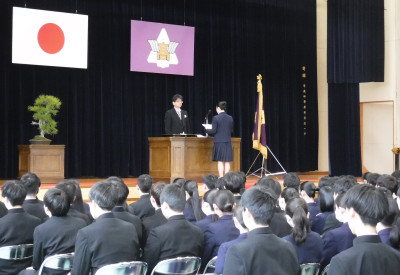

お花見情報 ～開花しました！～
2024年3月29日 10時51分昨年の今頃は満開だった鳥取東高付近を流れる袋川土手の桜が，開花宣言できる程度に開花していました。本校校地内にある桜も数輪，開花していました。
そこで…気象台の発表を待たずして，勝手に「開花宣言」します！

昨年の今頃は満開だった鳥取東高付近を流れる袋川土手の桜が，開花宣言できる程度に開花していました。本校校地内にある桜も数輪，開花していました。
そこで…気象台の発表を待たずして，勝手に「開花宣言」します！
終業式の後，学年別に開催された本年度最後の学年集会の様子をお伝えします。
本日（３月22日），本年度を締めくくる終業式を行いました。
雪がちらついた本日，２年生のクラス対抗球技大会を開催しました。凍えるような寒さの中，体育館の各コートでは熱戦が繰り広げられました。
本年度最後の学校行事となるクラス対抗球技大会を，生徒会執行部を中心に終日開催しました。
今日は１年生大会。男女ともバレーボールとドッヂボールに加え，男子はフットサル，女子はバスケットボールの各３競技で競いました。
本日（３月14日）正午。
受検生そして保護者の皆様でごった返す中，本校体育館にて，令和６年度高校入試における合格者を発表しました。
卒業式後に各教室で行われた，３年生最後のホームルーム活動の様子を画像でお伝えします。
高校生活の２年間をコロナ禍で過ごした３年生276名（普通科235名，理数科41名）が本日，鳥取東高校から巣立っていきました。

表彰式の後，３年生の同窓会入会式を行いました。
明日（３月１日）の卒業式を前に，３年生の在学中における各種の表彰を行いました。